|
3.4 Girintiler ve çýkýntýlar
Kalýplanmýþ parçayý baþarýlý bir þekilde üretmek için bazý tasarým prensiplerine uyulmalýdýr. En temel prensip ise parçanýn katýlaþtýktan sonra kalýptan kolayca çýkartýlabilmesidir. Bu nokta bazen gözden kaçýrýlmakta ve parçanýn kalýp boþluðundan doðrudan çýkartýlmasýný imkânsýz hale getiren girintiler, parça tasarýmýnda kullanýlmaktadýr. Eðer girintiler-çýkýntýlar mecburiyse, parçalý kalýplar ve hareketli kalýp parçalarý gereklidir.
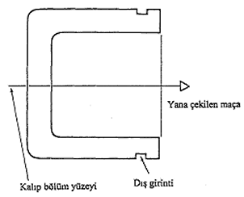
Þekil 3.9 Dýþ yüzeydeki girintiler için kullanýlan sistem [2]
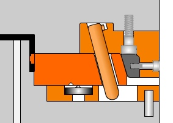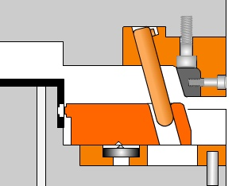
Þekil 3.10 Dýþ girintiler için kullanýlan örnek kalýplama yöntemi [7]
Ýç girinti ve çýkýntýlar kalýpta maliyetleri artýrýrlar. Bazý durumlarda eðik maça kullanýlýr. Eðik maça kullanýmý aþaðýda verilmiþtir;
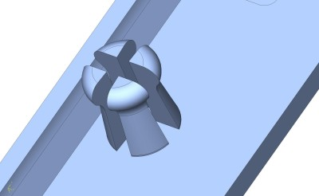
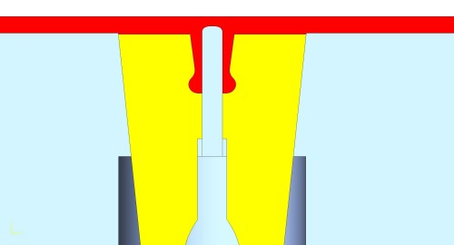
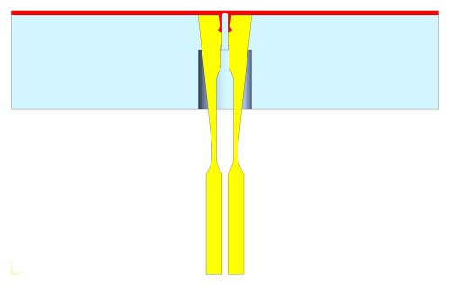
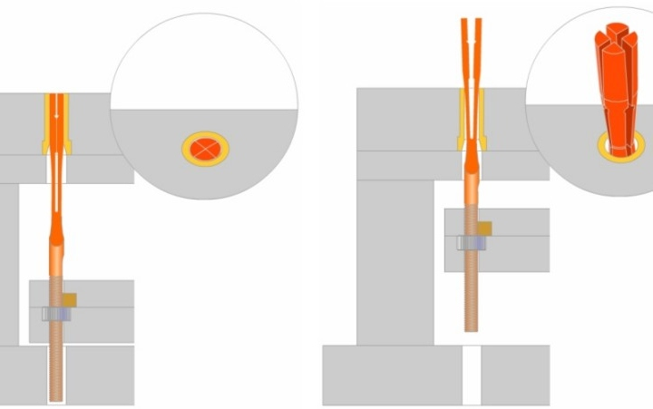
Þekil 3.11 Eðik maça kullaným alanlarý [7]
3.5 Draft açýlarý (Eðimler)
Rijit ve elastometrik plastiklerin imal edilecek parçalarýn tasarýmýnda, parçanýn kalýptan kolay çýkarýlabilmesi önemli bir konudur. Bunun için parçaya gereken iç ve dýþ eðimler verilmelidir. Parçalarýn çeperleri düz ve dik ise kalýbý açmak için daha fazla kuvvet sarf etmek gerekir.
Eðimler ortalama 1/4° dolayýnda seçilmektedir. Ancak, derinliði fazla olmayan parçalarda daha fazla (1/2°), kap biçimli derin parçalarda ise daha az (1/8°) tutulabilmektedir. Bazý plastikler malzemeler için tavsiye edilen eðim açýlarý þöyledir [1].
Polietilen 1/4° Asetal 0.1/8° Naylon 0.1/8°
Polystren 1/2° Akrilik 1/4°
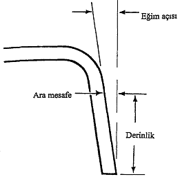
Þekil 3.12 Eðim açýsý ile derinlik arasýndaki iliþki [2]
3.6 Delikli çýkýntýlar (Bosses)
Bunlar, deliklerin kuvvetlendirilmesinde ve baðlantýlarda kullanýlan çýkýntýlardýr. Kaburgalarýn tasarýmýndaki genel delikli çýkýntýlar için de geçerlidir. Mümkünse delikli çkýntýlar yüzeyin birdenbire deðiþtiði yerlere (köþelere) konulmalýdýr. Böylece malzemelerin dengeli akýþý saðlanmýþ olur.
Gerekli yapýsal dayanýmý saðlamak için çýkýntýlarýn yüksekliðini çaplarýnýn iki katýyla sýnýrlamak gerekir. Basýnçlý kalýplamada yüksek çýkýntýlar gaz tutmaya eðilimlidirler.
Malzeme akýþýný desteklemek için delikli çýkýntýlarýn yan kýsýmlarýnda kaburgalar kullanýlabilir. Birçok durumda, delikli çýkýntýlar yapýsal denge saðlamak için birbirleriyle veya yan duvarlarla baðlanýr [2].
Aþaðýda delikli çýkýntýlarýn yerleþtirilmesinde tavsiye edilen tasarýmlar verilmiþtir [2].
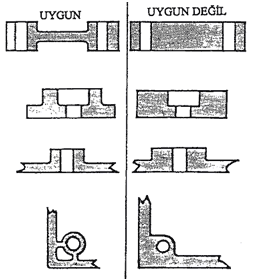
Þekil 3.13 Uygun ve uygun olmayan tasarýmlar
3.7 Delikler
Birçok nedenle parça üzerinde delikler kullanýlmaktadýr. Bunlarýn tasarýmý ve yerleþimi parçanýn yapýsýný en az zayýflatacak þekilde ve imalat karmaþýklýðýný azaltacak þekilde olmalýdýr. Birbirine komþu delikler arasýndaki ve delik il kenar arasýndaki mesafe en azýndan deliðin çapý kadar olmalýdýr.
Çapý 1.5mm'den küçük kör deliklerin derinliði çaplarý kadar olmalýdýr.
(Ø d:1.5 mm ise; h:d). Büyük deliklerde ise "derinlik/çap" oraný büyüyebilir. Ancak derinliðin çapýn dört misline çýktýðý durumlarda kör delikten vazgeçilip, deliðin duvarý tümüyle deldiði tasarým seçilmelidir(kör delik için h>2.5*d) [1].
Kör delikler, tek bir tarafýndan tutturulmuþ maçalarla oluþturulur. Maça plastiðin akýþý tarafýndan uygulanan dengelenmiþ basýnç nedeniyle þekil deðiþtirebilir, eðilebilir. Kör deliðin derinliði (maçanýn uzunluðu), delik çapýnýn iki katý olacak þekilde sýnýrlandýrýlmýþtýr. Çap 1.6 mm veya daha az ise derinlik çapý geçemez [2].
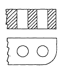
Þekil 3.14 Ardý ardýna deliklerin konumu [2]
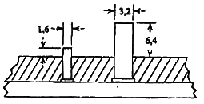
Þekil 3.15 Kör deliklerin açýlmasýnda kullanýlan maçalar [2] Yan çeperlerdeki deliler için ise;
eðik maça kullanýmý uygun kalýplama yöntemi olarak belirlenmiþtir.
3.8 Ýç ve dýþ diþler
Ýç ve dýþ diþler modern kalýplama teknikleriyle ekonomik bir þekilde oluþturulabilir. Diþler iþlenerek açýlabileceði gibi cývata tarafýndan cývatanýn sýkýlmasý sýrasýnda kendiliðinden açýlabilir. Vida diþleri, kalýbýn kendisi tarafýndan da açýlabilir.
Dýþ diþlere sahip parçalar kalýptan döndürülerek çýkarýlabilir. Ya da kalýp bölüm yüzeyi vidanýn ekseninden geçirilir. Böylece kalýp yarýlarý ayrýldýðýndan parça kolaylýkla çýkar.
Ýç diþler; diþi açýlmýþ maça ile oluþturulabilir. Kalýplama bittikten sonra, maça sanki vidanýn sökülmesi gibi çevrilerek parçadan çýkartýlýr. Bir parçaya diþ açýlacaksa baþta ve sonda en az 0,8mm'lik boþluk býrakýlmalýdýr [2]. Bu ekonomik prensibin kullanýldýðý bir örnek þiþe ve kavanoz kapaklarýdýr. Ýlk diþ sýyýrma yapacaðýndan bu boþluk býrakýlýr.
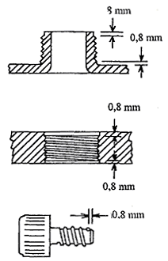
Þekil 3.16 Diþ tasarýmýnda boyutlar [2]
3.9 Yerleþtirmeler (inserts)
Plastik içine gömülen metal parçalar, bir baðlama elemaný, yük destekleme elemaný olarak kullanýlabilirler. Taþýmayý kolaylaþtýrdýklarý gibi baðlantýlarý da kolaylaþtýrýrlar. Genellikle plastiðe geçirilen elemanlar bakýr, pirinç, çelik gibi malzemelerden oluþmaktadýr. Ekonomik olmalarýna, maliyeti fazla etkilememelerine raðmen, sadece mukavemeti arttýrma, mesnetleme ve baðlama gereçleri ile kullanýlmalýdýrlar.
Parçaya takýlan elamanlarýn tasarýmýnda þunlar tavsiye edilebilir [1]:
1) Elemanlarýn çevresine yeterli plastik et kalýnlýðý verilmelidir. Bu plastik malzemelere göre deðiþmektedir. Aþaðýdaki tabloda çelik bir eleman kullanýldýðý takdirde, verilebilecek en az et kalýnlýðýnýn insert çapýnýn yüzde kaçý olmasý gerektiði listelenmektedir.
Tablo 5. Insert çapýna baðlý en az et kalýnlýðý
Insert çapý (çelik için) |
Malzeme |
% * 1.5 - 12.5 mm |
% * 12.5 - 25 mm |
Asetal |
50 * insert çapý |
30 * insert çapý |
Akrilik |
75* " |
60* " |
Naylon 6/ 66 |
50* " |
30 * " |
Polikarbonat |
100 * " |
80 * " |
Polietilen |
40 * " |
25 * " |
Polipropilen |
50 * " |
25 * " |
Polistiren |
150 * " |
130 * " |
2) Çok ince et kalýnlýklý ve kýrýlgan insertlerin kýrýlmasý engellenmelidir. Enjeksiyon basýncý altýnda ezilebilirler yada zedelenebilirler.
3) Ýnsertler keskin köþe ihtiva etmemelidirler.
4) Yerleþtirmeler üzerindeki diþler, týrtýklar, girinti ve çýkýntýlar malzeme akýþýna göre izin verecek þekilde olmalýdýr. Ayrýca yerleþtirmelerin parçadan çýktýðý yerlerde düzgün bir yüzey saðlanmalýdýr.
5) Yerleþtirmelerin tasarýmý, dönmeyi veya çekip çýkmayý önleyecek þekilde yapýlmalýdýr.
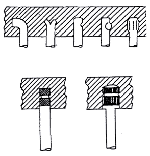
Þekil 3.17 Yerleþtirmeler [2]
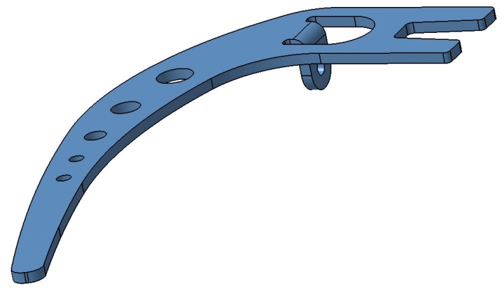
Þekil 3.18 Örnek metal insert [5]
|